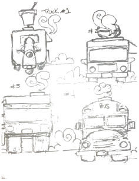
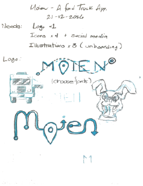
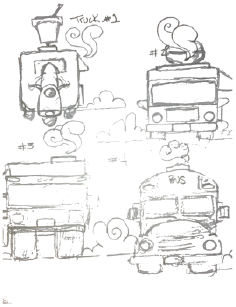
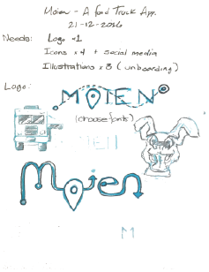

The Problem
While there exists a surprising amount of food truck apps in the mobile market, very few do little more than give you a list of trucks that may or may not be up to date. The problem was to create a simple, but well-designed application that tracks and locates nearby food trucks on a map. This app should include information about each truck, their menus, and give the user the opportunity to read and leave reviews. In addition, Moien should also have the ability for the user to order and pay from their mobile device before even leaving the office.
The Solution
Moien delivers functionality in a clean and efficient way. With the use of a simple onboarding system to quickly explain the ordering process and the implementation of big, colorful buttons in a flat design, it gives the user the opportunity to track, search, favorite, review, order and pay with minimal fuss.


 
